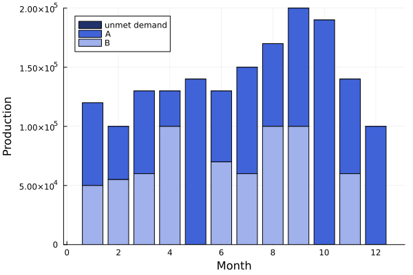
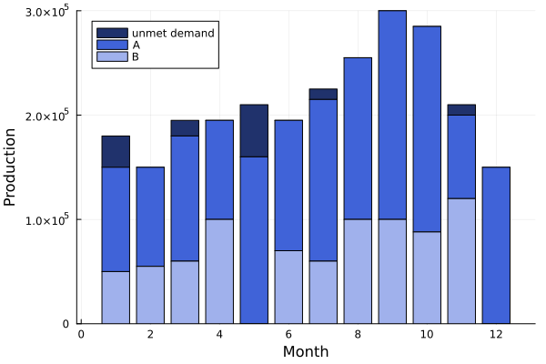
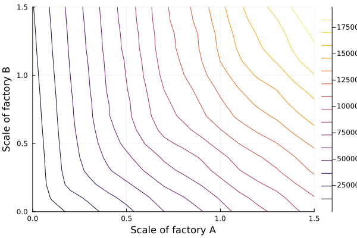

The factory schedule example
This tutorial was generated using Literate.jl. Download the source as a .jl file.
This tutorial was originally contributed by @Crghilardi.
This tutorial demonstrates a mixed-integer factory scheduling problem using DataFrames and delimited file input. It is a Julia translation of Part 5 from Introduction to Linear Programming with Python and shows how to design a model that stays feasible even when demand cannot be fully met.
Learning intentions:
- Validate external data before building a model, and wrap the full build-solve-extract cycle in a reusable function that accepts data and returns structured results
- Keep a model always feasible by adding a penalty variable for unmet demand, so infeasibility signals a data error rather than a solver failure
- Run parametric experiments by re-solving the same model under a grid of input values and visualising how the optimal cost responds
Required packages
This tutorial uses the following packages:
using JuMPimport CSVimport DataFramesimport HiGHSimport StatsPlotsimport TestFormulation
The Factory Scheduling Problem assumes we are optimizing the production of a good from factories $f \in F$ over the course of 12 months $m \in M$.
If a factory $f$ runs during a month $m$, a fixed cost of $a_f$ is incurred, the factory must produce $x_{m,f}$ units that is within some minimum and maximum production levels $l_f$ and $u_f$ respectively, and each unit of production incurs a variable cost $c_f$. Otherwise, the factory can be shut for the month with zero production and no fixed-cost is incurred. We denote the run/not-run decision by $z_{m,f} \in \{0, 1\}$, where $z_{m,f}$ is $1$ if factory $f$ runs in month $m$. The factory must produce enough units to satisfy demand $d_m$.
With a little effort, we can formulate our problem as the following linear program:
\[\begin{aligned} \min & \sum\limits_{f \in F, m \in M} a_f z_{m,f} + c_f x_{m,f} \\ \text{s.t.} & x_{m,f} \le u_f z_{m,f} && \forall f \in F, m \in M \\ & x_{m,f} \ge l_f z_{m,f} && \forall f \in F, m \in M \\ & \sum\limits_{f\in F} x_{m,f} = d_m && \forall m \in M \\ & z_{m,f} \in \{0, 1\} && \forall f \in F, m \in M. \end{aligned}\]
However, this formulation has a problem: if demand is too high, we may be unable to satisfy the demand constraint, and the problem will be infeasible.
When modeling, consider ways to formulate your model such that it always has a feasible solution. This greatly simplifies debugging data errors that would otherwise result in an infeasible solution. In practice, most practical decisions have a feasible solution. In our case, we could satisfy demand (at a high cost) by buying replacement items for the buyer, or running the factories in overtime to make up the difference.
We can improve our model by adding a new variable, $\delta_m$, which represents the quantity of unmet demand in each month $m$. We penalize $\delta_m$ by an arbitrarily large value of $10,000/unit in the objective.
\[\begin{aligned} \min & \sum\limits_{f \in F, m \in M} a_f z_{m,f} + c_f x_{m,f} + \sum\limits_{m \in M}10000 \delta_m \\ \text{s.t.} & x_{m,f} \le u_f z_{m,f} && \forall f \in F, m \in M \\ & x_{m,f} \ge l_f z_{m,f} && \forall f \in F, m \in M \\ & \sum\limits_{f\in F} x_{m,f} - \delta_m = d_m && \forall m \in M \\ & z_{m,f} \in \{0, 1\} && \forall f \in F, m \in M \\ & \delta_m \ge 0 && \forall m \in M. \end{aligned}\]
Data
The JuMP GitHub repository contains two text files with the data we need for this tutorial.
The first file contains a dataset of our factories, A and B, with their production and cost levels for each month. For the documentation, the file is located at:
factories_filename = joinpath(@__DIR__, "factory_schedule_factories.txt");To run locally, download factory_schedule_factories.txt and update factories_filename appropriately.
The file has the following contents:
print(read(factories_filename, String))factory month min_production max_production fixed_cost variable_cost
A 1 20000 100000 500 10
A 2 20000 110000 500 11
A 3 20000 120000 500 12
A 4 20000 145000 500 9
A 5 20000 160000 500 8
A 6 20000 140000 500 8
A 7 20000 155000 500 5
A 8 20000 200000 500 7
A 9 20000 210000 500 9
A 10 20000 197000 500 10
A 11 20000 80000 500 8
A 12 20000 150000 500 8
B 1 20000 50000 600 5
B 2 20000 55000 600 4
B 3 20000 60000 600 3
B 4 20000 100000 600 5
B 5 0 0 0 0
B 6 20000 70000 600 6
B 7 20000 60000 600 4
B 8 20000 100000 600 6
B 9 20000 100000 600 8
B 10 20000 100000 600 11
B 11 20000 120000 600 10
B 12 20000 150000 600 12We use the CSV and DataFrames packages to read it into Julia:
factory_df = CSV.read( factories_filename, DataFrames.DataFrame; delim = ' ', ignorerepeated = true,)| Row | factory | month | min_production | max_production | fixed_cost | variable_cost |
|---|---|---|---|---|---|---|
| String1 | Int64 | Int64 | Int64 | Int64 | Int64 | |
| 1 | A | 1 | 20000 | 100000 | 500 | 10 |
| 2 | A | 2 | 20000 | 110000 | 500 | 11 |
| 3 | A | 3 | 20000 | 120000 | 500 | 12 |
| 4 | A | 4 | 20000 | 145000 | 500 | 9 |
| 5 | A | 5 | 20000 | 160000 | 500 | 8 |
| 6 | A | 6 | 20000 | 140000 | 500 | 8 |
| 7 | A | 7 | 20000 | 155000 | 500 | 5 |
| 8 | A | 8 | 20000 | 200000 | 500 | 7 |
| 9 | A | 9 | 20000 | 210000 | 500 | 9 |
| 10 | A | 10 | 20000 | 197000 | 500 | 10 |
| 11 | A | 11 | 20000 | 80000 | 500 | 8 |
| 12 | A | 12 | 20000 | 150000 | 500 | 8 |
| 13 | B | 1 | 20000 | 50000 | 600 | 5 |
| 14 | B | 2 | 20000 | 55000 | 600 | 4 |
| 15 | B | 3 | 20000 | 60000 | 600 | 3 |
| 16 | B | 4 | 20000 | 100000 | 600 | 5 |
| 17 | B | 5 | 0 | 0 | 0 | 0 |
| 18 | B | 6 | 20000 | 70000 | 600 | 6 |
| 19 | B | 7 | 20000 | 60000 | 600 | 4 |
| 20 | B | 8 | 20000 | 100000 | 600 | 6 |
| 21 | B | 9 | 20000 | 100000 | 600 | 8 |
| 22 | B | 10 | 20000 | 100000 | 600 | 11 |
| 23 | B | 11 | 20000 | 120000 | 600 | 10 |
| 24 | B | 12 | 20000 | 150000 | 600 | 12 |
The second file contains the demand data by month:
demand_filename = joinpath(@__DIR__, "factory_schedule_demand.txt");To run locally, download factory_schedule_demand.txt and update demand_filename appropriately.
demand_df = CSV.read( demand_filename, DataFrames.DataFrame; delim = ' ', ignorerepeated = true,)| Row | month | demand |
|---|---|---|
| Int64 | Int64 | |
| 1 | 1 | 120000 |
| 2 | 2 | 100000 |
| 3 | 3 | 130000 |
| 4 | 4 | 130000 |
| 5 | 5 | 140000 |
| 6 | 6 | 130000 |
| 7 | 7 | 150000 |
| 8 | 8 | 170000 |
| 9 | 9 | 200000 |
| 10 | 10 | 190000 |
| 11 | 11 | 140000 |
| 12 | 12 | 100000 |
Data validation
Before moving on, it's always good practice to validate the data you read from external sources. The more effort you spend here, the fewer issues you will have later. The following function contains a few simple checks, but we could add more. For example, you might want to check that none of the values are too large (or too small), which might indicate a typo or a unit conversion issue (perhaps the variable costs are in $/1000 units instead of $/unit).
function validate_data( demand_df::DataFrames.DataFrame, factory_df::DataFrames.DataFrame,) # Minimum production must not exceed maximum production. @assert all(factory_df.min_production .<= factory_df.max_production) # Demand, minimum production, fixed costs, and variable costs must all be # non-negative. @assert all(demand_df.demand .>= 0) @assert all(factory_df.min_production .>= 0) @assert all(factory_df.fixed_cost .>= 0) @assert all(factory_df.variable_cost .>= 0) returnendvalidate_data(demand_df, factory_df)JuMP formulation
Next, we need to code our JuMP formulation. As shown in Design patterns for larger models, it's always good practice to code your model in a function that accepts well-defined input and returns well-defined output.
function solve_factory_scheduling( demand_df::DataFrames.DataFrame, factory_df::DataFrames.DataFrame,) # Even though we validated the data above, it's good practice to do it here # too. validate_data(demand_df, factory_df) months, factories = unique(factory_df.month), unique(factory_df.factory) model = Model(HiGHS.Optimizer) set_silent(model) @variable(model, status[months, factories], Bin) @variable(model, production[months, factories], Int) @variable(model, unmet_demand[months] >= 0) # We use `eachrow` to loop through the rows of the dataframe and add the # relevant constraints. for r in eachrow(factory_df) m, f = r.month, r.factory @constraint(model, production[m, f] <= r.max_production * status[m, f]) @constraint(model, production[m, f] >= r.min_production * status[m, f]) end @constraint( model, [r in eachrow(demand_df)], sum(production[r.month, :]) + unmet_demand[r.month] == r.demand, ) @objective( model, Min, 10_000 * sum(unmet_demand) + sum( r.fixed_cost * status[r.month, r.factory] + r.variable_cost * production[r.month, r.factory] for r in eachrow(factory_df) ) ) optimize!(model) assert_is_solved_and_feasible(model) schedules = Dict{Symbol,Vector{Float64}}( Symbol(f) => value.(production[:, f]) for f in factories ) schedules[:unmet_demand] = value.(unmet_demand) return ( termination_status = termination_status(model), cost = objective_value(model), # This `select` statement re-orders the columns in the DataFrame. schedules = DataFrames.select( DataFrames.DataFrame(schedules), [:unmet_demand, :A, :B], ), )endsolve_factory_scheduling (generic function with 1 method)Solution
Now we can call our solve_factory_scheduling function using the data we read in above.
solution = solve_factory_scheduling(demand_df, factory_df);Test.@test solution.termination_status == OPTIMALTest.@test solution.cost == 12_906_400.0Test PassedLet's see what solution contains:
solution.termination_statusOPTIMAL::TerminationStatusCode = 1solution.cost1.29064e7solution.schedules| Row | unmet_demand | A | B |
|---|---|---|---|
| Float64 | Float64 | Float64 | |
| 1 | 0.0 | 70000.0 | 50000.0 |
| 2 | 0.0 | 45000.0 | 55000.0 |
| 3 | 0.0 | 70000.0 | 60000.0 |
| 4 | 0.0 | 30000.0 | 100000.0 |
| 5 | 0.0 | 140000.0 | -0.0 |
| 6 | 0.0 | 60000.0 | 70000.0 |
| 7 | 0.0 | 90000.0 | 60000.0 |
| 8 | 0.0 | 70000.0 | 100000.0 |
| 9 | 0.0 | 100000.0 | 100000.0 |
| 10 | 0.0 | 190000.0 | -0.0 |
| 11 | 0.0 | 80000.0 | 60000.0 |
| 12 | 0.0 | 100000.0 | -0.0 |
These schedules will be easier to visualize as a graph:
StatsPlots.groupedbar( Matrix(solution.schedules); bar_position = :stack, labels = ["unmet demand" "A" "B"], xlabel = "Month", ylabel = "Production", legend = :topleft, color = ["#20326c" "#4063d8" "#a0b1ec"],)
Note that we don't have any unmet demand.
What happens if demand increases?
Let's run an experiment by increasing the demand by 50% in all time periods:
demand_df.demand .*= 1.512-element Vector{Float64}:
180000.0
150000.0
195000.0
195000.0
210000.0
195000.0
225000.0
255000.0
300000.0
285000.0
210000.0
150000.0Now we resolve the problem:
high_demand_solution = solve_factory_scheduling(demand_df, factory_df);and visualize the solution:
StatsPlots.groupedbar( Matrix(high_demand_solution.schedules); bar_position = :stack, labels = ["unmet demand" "A" "B"], xlabel = "Month", ylabel = "Production", legend = :topleft, color = ["#20326c" "#4063d8" "#a0b1ec"],)
Uh oh, we can't satisfy all of the demand.
How sensitive is the solution to changes in variable cost?
Let's run another experiment, this time seeing how the optimal objective value changes as we vary the variable costs of each factory.
First though, let's reset the demand to it's original level:
demand_df.demand ./= 1.5;For our experiment, we're going to scale the variable costs of both factories by a set of values from 0.0 to 1.5:
scale_factors = 0:0.1:1.50.0:0.1:1.5At a high level, we're going to loop over the scale factors for A, then the scale factors for B, rescale the input data, call our solve_factory_scheduling example, and then store the optimal objective value in the following cost matrix:
cost = zeros(length(scale_factors), length(scale_factors));Because we're modifying factory_df in-place, we need to store the original variable costs in a new column:
factory_df[!, :old_variable_cost] = copy(factory_df.variable_cost);Then, we need a function to scale the :variable_cost column for a particular factory by a value scale:
function scale_variable_cost(df, factory, scale) rows = df.factory .== factory df[rows, :variable_cost] .= round.(Int, df[rows, :old_variable_cost] .* scale) returnendscale_variable_cost (generic function with 1 method)Our experiment is just a nested for-loop, modifying A and B and storing the cost:
for (j, a) in enumerate(scale_factors) scale_variable_cost(factory_df, "A", a) for (i, b) in enumerate(scale_factors) scale_variable_cost(factory_df, "B", b) cost[i, j] = solve_factory_scheduling(demand_df, factory_df).cost endendLet's visualize the cost matrix:
StatsPlots.contour( scale_factors, scale_factors, cost; xlabel = "Scale of factory A", ylabel = "Scale of factory B",)
What can you infer from the solution?
The Power Systems tutorial explains a number of other ways you can structure a problem to perform a parametric analysis of the solution. In particular, you can use in-place modification to reduce the time it takes to build and solve the resulting models.